|
| .: Replacing the spark plugs on a 156 V6 (1998) :. |
Another one of Alfa Romeo's greatest designs is the ability to replace the spark plugs on a V6 in ya lunch break. OK, thats a lie.
But if you're like me, someone that never touched a spark plug in his life, then there is still a chance you can do this. I did.
The plugs on a V6 are meant to last upto 65K (miles).
If want to check them without removing all six, then read down on how to replace the front 3.
Note: This guide was created with a 98 V6 156, the process may differ in other models. T-sparks have 4small/4big plugs.
The problem:V6 spark plugs need replacing.
Time: Experianced mechanic 1.5 hours, novice like me 3-4 hours.
Prep:Tools, parts and tips.
Plugs ...
Tools required...
extention bar
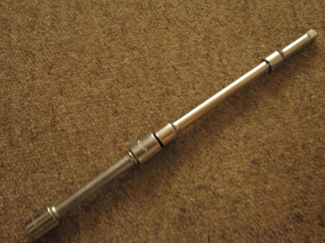
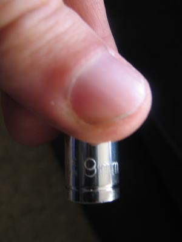
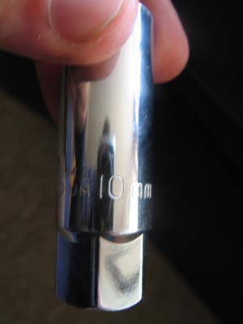
socket set
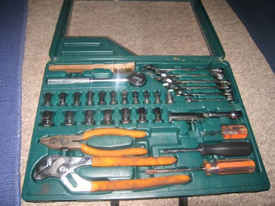
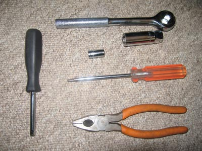
allan keys
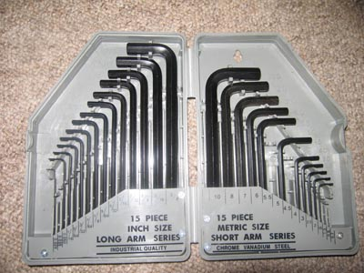
The one missing is one I used.
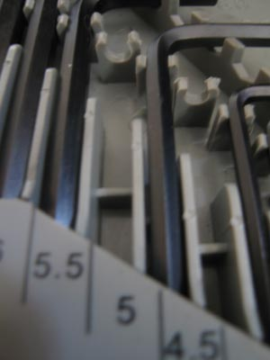
And finally a pair of Hose Clip Pliers
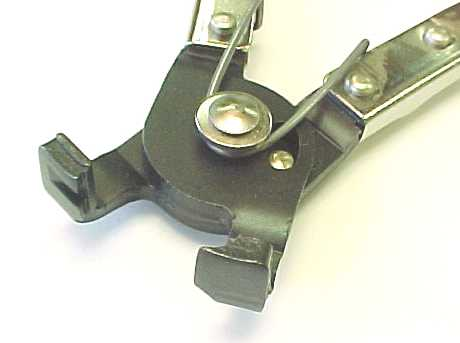
Tips:
Lefty loose, Righty tights. Just for those that have forgotten what way to undo/do up nuts.
Most of the bolts that need removing are removed using a 5mm allan key.
The engine...
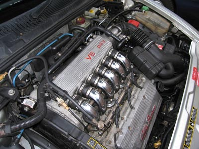
1:Disconnect the oil vapour recirculation pipe from the right cylinder head. (1)
2:Loosen the bands (2a) and remove the hose between the resonator and the butterfly casing (2b).
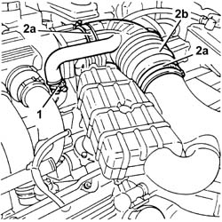
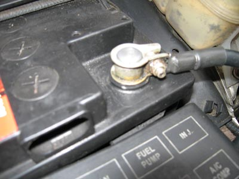
4:Loosen the bands fixing the inlet ducts to the air chamber. (1) Just use a small head screwdriver to prize them off.
5:Disconnect the oil vapour recirculation pipe from the air chamber. (2)
6:Disconnect the vacuum intake pipe from the air chamber. (3)
7:Disconnect the fuel/oil vapour recirculation pipe from the air chamber.(4)
8:Undo the bolts (5a) and move the oil vapour separator (5b) aside.
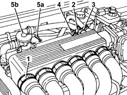
My pic of where the bolts are located.
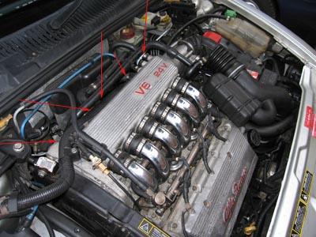
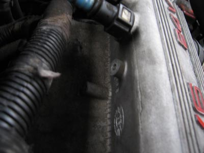
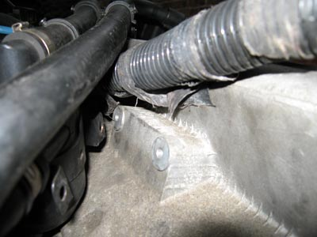
Also disconnect this pipe...
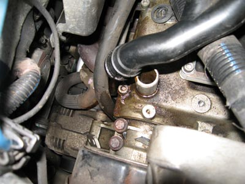
Then disconnect the pipe in top of this picture & and move it to the left, out of the way.
You will also need to use your 9mm socket to remove the bolt holding down the black plastic ducting.
This will give you more room to manover the phlem out (bit with "V6 24v" written on it).
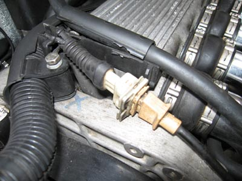
Disconnect the MAF, so that you can move the air induct tubing out of the way.
The MAF plug is shown in the middle of the pic.
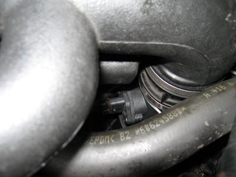
9:Disconnect the corrugated hose from the throttle body and move aside.
10:Disconnect the electrical connection of the throttle body actuator. (1)
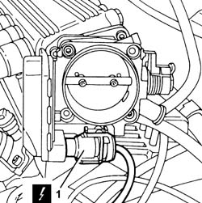
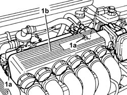
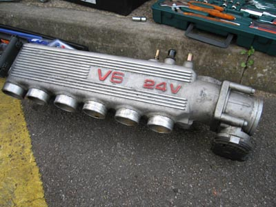
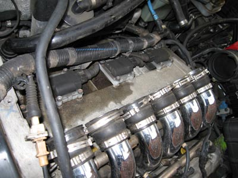
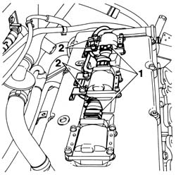
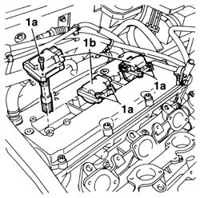
Time for the plugs...
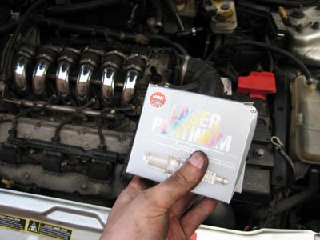
See the instructions below on replacing the front plugs. Its the same for the top set as well.
Front plugs....
15:Undo the bolts (1a) and remove the left cylinder head ignition coils cover (1b).
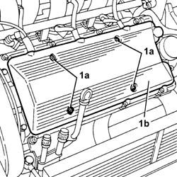
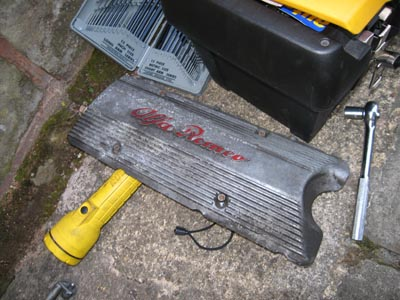
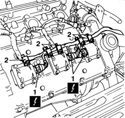
My pic of what you see..
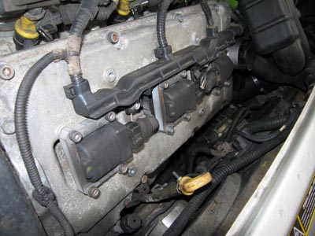
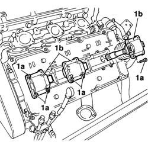
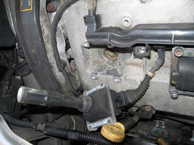
Pic of the location of the spark plug
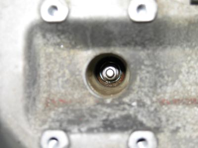
Time now to use the racket, extention bar & socket removal tool.
Attach them together, and insert it into the engine block. Turn the plug to the left (undo).
REMEMBER be gentle.
Pull out the plug & attach the new plug into the tool & lower it back in.
Tighten up the new plug to "finger tight" and then 1/2 a turn & DO NOT cross thread it.
If not tight enough, then the spark plug could come loose & cause a banging sound. Not good.
All you have todo now is reverse the procedure.
Tips on putting things back together.
1: The hardest part is getting the brackets around the intake runners (big silver pipes) back on.
I used a pair of plyers & squezzed for all my life! This is a crap way of doing it & if you can find the tool, get it!
This took me 30 min to put them back on, with the tool it would be 2 minute job.
2: Putting the top phlem on, big metal part with "V6 24v" back on take a bit of pushing & shoving.
3: Double check every pipe, bolt, hose, etc before starting the car.
4: Dont forget the MAF & battery!
19:Go for a beer!!
I did!
I hope this helps some of you out.
- alfa156.net - jeff_porter.
| .: Replacing the spark plugs on a 156 V6 (1998) :. |